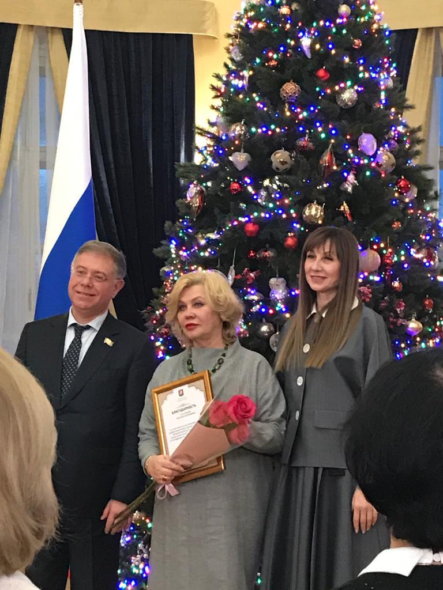

О художнике
 Добро пожаловать на страницу художника! Здесь вы познакомитесь с творчеством, узнаете историю создания работ и откроете для себя уникальный мир искусства.
Добро пожаловать на страницу художника! Здесь вы познакомитесь с творчеством, узнаете историю создания работ и откроете для себя уникальный мир искусства.
Вторая жизнь искусства — участие в выставке в поддержку участников СВО
 В декабре 2023 года в стенах Московской городской Думы состоялась знаковая акция «Искусство СВОим», посвящённая поддержке участников специальной военной операции в рамках Арт проекта "Вторая жизнь". Для меня участие в этом проекте стало не только важным профессиональным событием, но и актом внутреннего отклика на всё, что происходит в нашем обществе, нашей стране, в сердцах людей.
В декабре 2023 года в стенах Московской городской Думы состоялась знаковая акция «Искусство СВОим», посвящённая поддержке участников специальной военной операции в рамках Арт проекта "Вторая жизнь". Для меня участие в этом проекте стало не только важным профессиональным событием, но и актом внутреннего отклика на всё, что происходит в нашем обществе, нашей стране, в сердцах людей.
Проект объединил художников, вдохновлённых идеей обновления. Каждая работа несла в себе не только эстетическое послание, но и мощный эмоциональный импульс — поддержку, благодарность, сопричастность. Моя работа в рамках выставки была выполнена маслом.
 Особенно трогательным было видеть, как посетители — останавливались у работ, искали в них личные смыслы, делились историями. Пространство Думы, привычное к законам и решениям, на эти дни стало пространством чувств и искусства, глубоко резонирующим с сегодняшним временем.
Название проекта — «Вторая жизнь» — оказалось символичным. Оно отражает не только идею арт-рециклинга, но и более глубокий посыл: духовное возрождение, возвращение к человеческому, живому, настоящему. В условиях непростых исторических вызовов именно культура и искусство дают нам силы — сохранять достоинство, быть опорой друг для друга, передавать свет дальше.
Эта выставка стала напоминанием: искусство не бывает в стороне. Оно может быть тихим, но всегда — искренним. Сегодня оно — рядом с теми, кто защищает нас. И если моя работа, моя ниточка, мой мазок смогли согреть хоть одно сердце — значит, я на своём месте.
В Мемориальном музее Александра Скрябина 17 сентября 2022 прошла выставка «Яркий мир». В экспозиции посетители увидели живописные и вышитые картины художника Оксаны Азаровой. Гостям показали полотна, на которых изображены букеты цветов, романтические городские пейзажи, море с парусниками и яркие закаты.
 Оксана Азарова — участник Творческого союза художников России. В 2021 году она окончила Московскую художественно-промышленную академию им. С.Г. Строганова.
Оксана Азарова — участник Творческого союза художников России. В 2021 году она окончила Московскую художественно-промышленную академию им. С.Г. Строганова.
 В марте 2019 года в Доме учёных состоялась персональная выставка — собрание работ, рождённых в тишине размышлений и любви к миру. Здесь живопись встречается с вышивкой, графика — с фантазией, а нити превращаются в линии, что ведут к сердцу.
В марте 2019 года в Доме учёных состоялась персональная выставка — собрание работ, рождённых в тишине размышлений и любви к миру. Здесь живопись встречается с вышивкой, графика — с фантазией, а нити превращаются в линии, что ведут к сердцу.
Цветы распустились на холстах и ткани — трепетные «Маки» напоминают о мимолётности красоты. «Аист» застыл в стремительном полёте. В вышивке ожили сказки: задумчивая «Царевна Лягушка» и весёлые «Двойняшки» улыбаются миру с одной души на двоих.
 А над всем — мерцающее «Северное сияние», напоминание о чуде, которое рядом. Эта выставка — не столько о технике, сколько о чувствах. Благодарю всех, кто был рядом — за внимание, тепло и вдохновение.
А над всем — мерцающее «Северное сияние», напоминание о чуде, которое рядом. Эта выставка — не столько о технике, сколько о чувствах. Благодарю всех, кто был рядом — за внимание, тепло и вдохновение.
 Исследуйте разделы сайта, чтобы увидеть галерею работ, узнать последние новости и приобрести оригинальные произведения в интернет‑магазине.
Исследуйте разделы сайта, чтобы увидеть галерею работ, узнать последние новости и приобрести оригинальные произведения в интернет‑магазине.